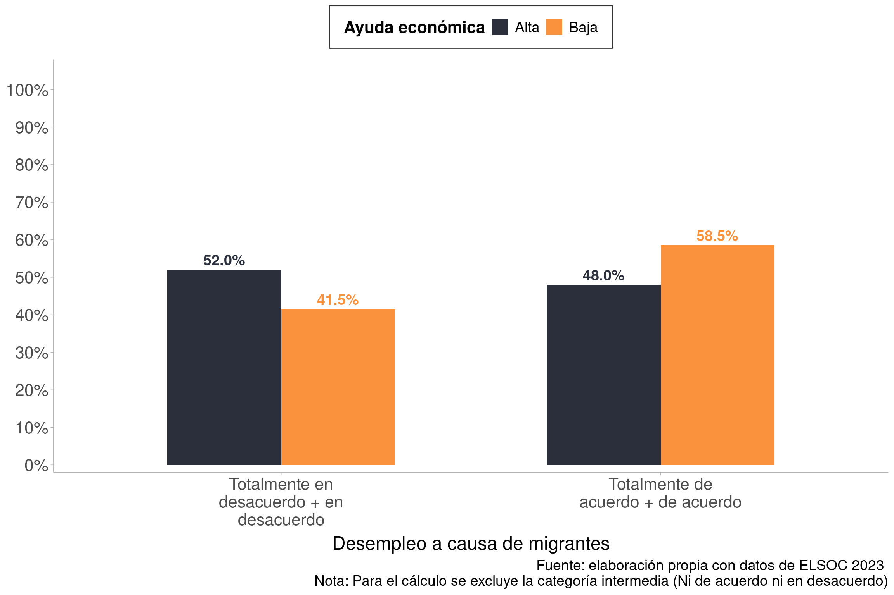

load(here('input/data/raw_data/elsoc.RData'))
elsoc_long <- elsoc_long_2016_2023 # acortar
missing_codes <- c(-999, -888, -777, -666)
elsoc_long <- elsoc_long %>%
mutate(across(everything(), ~ sjlabelled::set_na(.x, na = missing_codes)))3 Dimensión: Redes sociales
El objetivo de este script es mostrar las decisiones metodológicas para la construcción de los subíndices de migración y redes sociales para la producción de figuras con la información que se muestra en el siguiente gráfico, que está en la presentación de la CEP 2025:
https://ocscoes.github.io/propuesta-medicion-elsoc/presentations/CEP_2025/cep_2025.html#/7/3
3.1 Cargar Librerías y espacio de trabajo
3.2 Data
Call original dataset
4 Variables & Recodes
4.1 Univariados: Variables
El índice de Ayuda Económica se compone de:
Frecuencia: prestar $10.000 o más
Frecuencia: ayudar a encontrar trabajo a alguien
Donde:
find_var(data = elsoc_long,"presto") # corresponde a c07_06
frq(elsoc_long$c07_06)
find_var(data = elsoc_long,"trabajo") # corresponde a c07_08
frq(elsoc_long$c07_08)Por su parte, las variables de migración que preguntan por la percepción en torno a la relación entre perdida de identidad nacional y migración, y por la restricción a migrantes:
find_var(data = elsoc_long,"desem") # corresponde a r12_04
frq(elsoc_long$r12_04)4.2 Selección, missings y recodificación
check3 <- elsoc_long %>%
select(c07_06, c07_08, ola, r12_04)
# cheq
frq(check3$r12_04) # okGrado de acuerdo: Con llegada de [PER/HAI/VEN] aumenta el desempleo (x) <numeric>
# total N=20761 valid N=20456 mean=3.23 sd=1.17
Value | Label | N | Raw % | Valid % | Cum. %
------------------------------------------------------------------------
1 | Totalmente en desacuerdo | 1325 | 6.38 | 6.48 | 6.48
2 | En desacuerdo | 5781 | 27.85 | 28.26 | 34.74
3 | Ni en desacuerdo ni de acuerdo | 2594 | 12.49 | 12.68 | 47.42
4 | De acuerdo | 8338 | 40.16 | 40.76 | 88.18
5 | Totalmente de acuerdo | 2418 | 11.65 | 11.82 | 100.00
<NA> | <NA> | 305 | 1.47 | <NA> | <NA>check3$ayu_eco <- rowMeans(check3[,c("c07_06","c07_08")], na.rm = TRUE)
slice(check3,1:10) %>% select(c07_06, c07_08, ayu_eco, ola) # check ok c07_06 c07_08 ayu_eco ola
1 3 1 2.0 1
2 1 2 1.5 1
3 3 2 2.5 1
4 3 2 2.5 1
5 3 1 2.0 1
6 3 1 2.0 1
7 3 2 2.5 1
8 2 2 2.0 1
9 3 1 2.0 1
10 2 2 2.0 1frq(check3$ayu_eco) # okx <numeric>
# total N=20761 valid N=18014 mean=2.03 sd=0.69
Value | N | Raw % | Valid % | Cum. %
---------------------------------------
1.00 | 3290 | 15.85 | 18.26 | 18.26
1.50 | 2960 | 14.26 | 16.43 | 34.70
2.00 | 4995 | 24.06 | 27.73 | 62.42
2.50 | 2947 | 14.19 | 16.36 | 78.78
3.00 | 3822 | 18.41 | 21.22 | 100.00
<NA> | 2747 | 13.23 | <NA> | <NA>4.3 Variación por ola
frq(check3$ola) # okIdentificador de ola de encuesta (x) <numeric>
# total N=20761 valid N=20761 mean=3.95 sd=1.94
Value | Label | N | Raw % | Valid % | Cum. %
-----------------------------------------------
1 | 2016 | 2927 | 14.10 | 14.10 | 14.10
2 | 2017 | 2473 | 11.91 | 11.91 | 26.01
3 | 2018 | 3748 | 18.05 | 18.05 | 44.06
4 | 2019 | 3417 | 16.46 | 16.46 | 60.52
5 | 2021 | 2740 | 13.20 | 13.20 | 73.72
6 | 2022 | 2730 | 13.15 | 13.15 | 86.87
7 | 2023 | 2726 | 13.13 | 13.13 | 100.00
<NA> | <NA> | 0 | 0.00 | <NA> | <NA># Tabla con el promedio de seguridad subjetiva por ola
ayuda_por_ola <- check3 %>%
group_by(ola) %>%
summarise(promedio_ayuda_economica = mean(ayu_eco, na.rm = TRUE))
if (!exists("table_format")) table_format <- "simple"
knitr::kable(ayuda_por_ola, format = table_format, caption = "Promedio de Ayuda Económica por ola")| ola | promedio_ayuda_economica |
|---|---|
| 1 | 2.066883 |
| 2 | 2.035425 |
| 3 | 2.029757 |
| 4 | 1.982582 |
| 5 | 2.052892 |
| 6 | |
| 7 | 2.016875 |
# Tabla con el promedio de Ayuda Económica por ola y por categorías de r12_04 (desempleo migrantes)
ayuda_por_ola_desempleo <- check3 %>%
group_by(ola, r12_04) %>%
summarise(promedio_ayuda_economica = mean(ayu_eco, na.rm = TRUE), n = n()) %>%
ungroup()
knitr::kable(ayuda_por_ola_desempleo, format = table_format, caption = "Promedio de Ayuda Económica por ola y categoría de migración (r12_04)")| ola | r12_04 | promedio_ayuda_economica | n |
|---|---|---|---|
| 1 | 1 | 2.172131 | 122 |
| 1 | 2 | 2.086000 | 750 |
| 1 | 3 | 2.017804 | 338 |
| 1 | 4 | 2.043741 | 1327 |
| 1 | 5 | 2.172107 | 338 |
| 1 | 1.764706 | 52 | |
| 2 | 1 | 2.140777 | 206 |
| 2 | 2 | 2.129765 | 683 |
| 2 | 3 | 1.962712 | 295 |
| 2 | 4 | 2.028460 | 897 |
| 2 | 5 | 1.906877 | 349 |
| 2 | 1.714286 | 43 | |
| 3 | 1 | 2.096491 | 285 |
| 3 | 2 | 2.095829 | 1008 |
| 3 | 3 | 2.017822 | 505 |
| 3 | 4 | 1.984902 | 1424 |
| 3 | 5 | 2.061033 | 426 |
| 3 | 1.740000 | 100 | |
| 4 | 1 | 2.149402 | 251 |
| 4 | 2 | 2.049325 | 963 |
| 4 | 3 | 1.938849 | 417 |
| 4 | 4 | 1.900968 | 1344 |
| 4 | 5 | 2.053140 | 414 |
| 4 | 1.714286 | 28 | |
| 5 | 1 | 2.200000 | 135 |
| 5 | 2 | 2.103842 | 837 |
| 5 | 3 | 2.058176 | 319 |
| 5 | 4 | 2.008551 | 1113 |
| 5 | 5 | 2.039474 | 305 |
| 5 | 1.709677 | 31 | |
| 6 | 1 | 155 | |
| 6 | 2 | 856 | |
| 6 | 3 | 338 | |
| 6 | 4 | 1087 | |
| 6 | 5 | 272 | |
| 6 | 22 | ||
| 7 | 1 | 2.125731 | 171 |
| 7 | 2 | 2.131579 | 684 |
| 7 | 3 | 1.952880 | 382 |
| 7 | 4 | 1.954189 | 1146 |
| 7 | 5 | 2.038217 | 314 |
| 7 | 1.758621 | 29 |
# Tabla ordenada por r12_04
ayuda_por_ola_desempleo_ordered <- ayuda_por_ola_desempleo %>%
arrange(r12_04, ola)
knitr::kable(ayuda_por_ola_desempleo_ordered, format = table_format, caption = "Promedio de ayuda económica por ola y categoría de migración (r12_04) - Ordenado por r12_04")| ola | r12_04 | promedio_ayuda_economica | n |
|---|---|---|---|
| 1 | 1 | 2.172131 | 122 |
| 2 | 1 | 2.140777 | 206 |
| 3 | 1 | 2.096491 | 285 |
| 4 | 1 | 2.149402 | 251 |
| 5 | 1 | 2.200000 | 135 |
| 6 | 1 | 155 | |
| 7 | 1 | 2.125731 | 171 |
| 1 | 2 | 2.086000 | 750 |
| 2 | 2 | 2.129765 | 683 |
| 3 | 2 | 2.095829 | 1008 |
| 4 | 2 | 2.049325 | 963 |
| 5 | 2 | 2.103842 | 837 |
| 6 | 2 | 856 | |
| 7 | 2 | 2.131579 | 684 |
| 1 | 3 | 2.017804 | 338 |
| 2 | 3 | 1.962712 | 295 |
| 3 | 3 | 2.017822 | 505 |
| 4 | 3 | 1.938849 | 417 |
| 5 | 3 | 2.058176 | 319 |
| 6 | 3 | 338 | |
| 7 | 3 | 1.952880 | 382 |
| 1 | 4 | 2.043741 | 1327 |
| 2 | 4 | 2.028460 | 897 |
| 3 | 4 | 1.984902 | 1424 |
| 4 | 4 | 1.900968 | 1344 |
| 5 | 4 | 2.008551 | 1113 |
| 6 | 4 | 1087 | |
| 7 | 4 | 1.954189 | 1146 |
| 1 | 5 | 2.172107 | 338 |
| 2 | 5 | 1.906877 | 349 |
| 3 | 5 | 2.061033 | 426 |
| 4 | 5 | 2.053140 | 414 |
| 5 | 5 | 2.039474 | 305 |
| 6 | 5 | 272 | |
| 7 | 5 | 2.038217 | 314 |
| 1 | 1.764706 | 52 | |
| 2 | 1.714286 | 43 | |
| 3 | 1.740000 | 100 | |
| 4 | 1.714286 | 28 | |
| 5 | 1.709677 | 31 | |
| 6 | 22 | ||
| 7 | 1.758621 | 29 |
"Recodificar índice de ayuda económica en bajo y alto"[1] "Recodificar índice de ayuda económica en bajo y alto"check3 <- check3 %>%
mutate(ayu_eco3 = case_when(
ayu_eco >= 1 & ayu_eco <= 2 ~ "Bajo",
ayu_eco > 2 & ayu_eco <= 3 ~ "Alto",
TRUE ~ NA_character_
))
frq(check3$ayu_eco3) # okx <character>
# total N=20761 valid N=18014 mean=1.62 sd=0.48
Value | N | Raw % | Valid % | Cum. %
----------------------------------------
Alto | 6769 | 32.60 | 37.58 | 37.58
Bajo | 11245 | 54.16 | 62.42 | 100.00
<NA> | 2747 | 13.23 | <NA> | <NA>#reordenar alto, medio, bajo
check3$ayu_eco3 <- factor(check3$ayu_eco3, levels = c("Alto", "Bajo"))
frq(check3$ayu_eco3) # okx <categorical>
# total N=20761 valid N=18014 mean=1.62 sd=0.48
Value | N | Raw % | Valid % | Cum. %
----------------------------------------
Alto | 6769 | 32.60 | 37.58 | 37.58
Bajo | 11245 | 54.16 | 62.42 | 100.00
<NA> | 2747 | 13.23 | <NA> | <NA># recodificar r12_04 (desempleo migrantes) en muy de acuerdo = 1, el resto=0, sacando los NAs
check3 <- check3 %>%
mutate(desempleo_migrantes5 = case_when(
r12_04 == 5 ~ "Muy de acuerdo",
r12_04 %in% c(1, 2, 3, 4) ~ "Otro",
TRUE ~ NA_character_
))
frq(check3$desempleo_migrantes5) # okx <character>
# total N=20761 valid N=20456 mean=1.88 sd=0.32
Value | N | Raw % | Valid % | Cum. %
-------------------------------------------------
Muy de acuerdo | 2418 | 11.65 | 11.82 | 11.82
Otro | 18038 | 86.88 | 88.18 | 100.00
<NA> | 305 | 1.47 | <NA> | <NA># recodificar c37_05 (restriccion migrantes) en muy en desacuerdo = 1, el resto=0, sacando los NAs
check3 <- check3 %>%
mutate(desempleo_migrantes1 = case_when(
r12_04 == 1 ~ "Muy en desacuerdo",
r12_04 %in% c(2, 3, 4,5) ~ "Otro",
TRUE ~ NA_character_
))
frq(check3$desempleo_migrantes1) # okx <character>
# total N=20761 valid N=20456 mean=1.94 sd=0.25
Value | N | Raw % | Valid % | Cum. %
----------------------------------------------------
Muy en desacuerdo | 1325 | 6.38 | 6.48 | 6.48
Otro | 19131 | 92.15 | 93.52 | 100.00
<NA> | 305 | 1.47 | <NA> | <NA>#recodificar ayuda económica en baja y alta
check3 <- check3 %>%
mutate(ayu_eco2 = case_when(
ayu_eco >= 1 & ayu_eco <= 2 ~ "Baja",
ayu_eco > 2 & ayu_eco <= 3 ~ "Alta",
TRUE ~ NA_character_
))
check3$ayu_eco2 <- factor(check3$ayu_eco2, levels = c("Alta", "Baja"))
frq(check3$ayu_eco2)x <categorical>
# total N=20761 valid N=18014 mean=1.62 sd=0.48
Value | N | Raw % | Valid % | Cum. %
----------------------------------------
Alta | 6769 | 32.60 | 37.58 | 37.58
Baja | 11245 | 54.16 | 62.42 | 100.00
<NA> | 2747 | 13.23 | <NA> | <NA>Tabla curzada con muy de acuerdo (desempleo_migrantes5) y apoyo económico (ayu_eco3)
tabla_cruzada <- check3 %>%
filter(!is.na(ayu_eco3) & !is.na(desempleo_migrantes5) & desempleo_migrantes5 == "Muy de acuerdo") %>%
group_by(ola, ayu_eco3) %>%
summarise(n = n()) %>%
group_by(ola) %>%
mutate(total_ola = sum(n),
porcentaje = (n / total_ola) * 100) %>%
ungroup()
knitr::kable(tabla_cruzada, format = table_format, caption = "Tabla cruzada de ayuda económica y desempleo migrantes (Muy de acuerdo) por ola - porcentaje dentro de ola")| ola | ayu_eco3 | n | total_ola | porcentaje |
|---|---|---|---|---|
| 1 | Alto | 153 | 337 | 45.40059 |
| 1 | Bajo | 184 | 337 | 54.59941 |
| 2 | Alto | 123 | 349 | 35.24355 |
| 2 | Bajo | 226 | 349 | 64.75645 |
| 3 | Alto | 180 | 426 | 42.25352 |
| 3 | Bajo | 246 | 426 | 57.74648 |
| 4 | Alto | 160 | 414 | 38.64734 |
| 4 | Bajo | 254 | 414 | 61.35266 |
| 5 | Alto | 124 | 304 | 40.78947 |
| 5 | Bajo | 180 | 304 | 59.21053 |
| 7 | Alto | 113 | 314 | 35.98726 |
| 7 | Bajo | 201 | 314 | 64.01274 |
tabla_cruzada2 <- check3 %>%
filter(!is.na(ayu_eco3) & !is.na(desempleo_migrantes1) & desempleo_migrantes1 == "Muy en desacuerdo") %>%
group_by(ola, ayu_eco3) %>%
summarise(n = n()) %>%
group_by(ola) %>%
mutate(total_ola = sum(n),
porcentaje = (n / total_ola) * 100) %>%
ungroup()
knitr::kable(tabla_cruzada, format = table_format, caption = "Tabla cruzada de ayuda económica y desempleo migrantes (Muy en desacuerdo) por ola - porcentaje dentro de ola")| ola | ayu_eco3 | n | total_ola | porcentaje |
|---|---|---|---|---|
| 1 | Alto | 153 | 337 | 45.40059 |
| 1 | Bajo | 184 | 337 | 54.59941 |
| 2 | Alto | 123 | 349 | 35.24355 |
| 2 | Bajo | 226 | 349 | 64.75645 |
| 3 | Alto | 180 | 426 | 42.25352 |
| 3 | Bajo | 246 | 426 | 57.74648 |
| 4 | Alto | 160 | 414 | 38.64734 |
| 4 | Bajo | 254 | 414 | 61.35266 |
| 5 | Alto | 124 | 304 | 40.78947 |
| 5 | Bajo | 180 | 304 | 59.21053 |
| 7 | Alto | 113 | 314 | 35.98726 |
| 7 | Bajo | 201 | 314 | 64.01274 |
frq(check3$desempleo_migrantes1) # okx <character>
# total N=20761 valid N=20456 mean=1.94 sd=0.25
Value | N | Raw % | Valid % | Cum. %
----------------------------------------------------
Muy en desacuerdo | 1325 | 6.38 | 6.48 | 6.48
Otro | 19131 | 92.15 | 93.52 | 100.00
<NA> | 305 | 1.47 | <NA> | <NA>5 Gráfico
#recodificar algo de acuerdo = 4 y muy de acuerdo = 5 como "De acuerdo", 3= "ni de acuerdo ni desacuerdo", y 1 y 2 como "en desacuerdo, sacando los NAs
elsoc_long <- elsoc_long %>%
mutate(desempleo_migrantes = case_when(
r12_04 %in% c(1, 2) ~ "Totalmente en desacuerdo + en desacuerdo",
r12_04 == 3 ~ "Ni de acuerdo ni en desacuerdo",
r12_04 %in% c(4, 5) ~ "Totalmente de acuerdo + de acuerdo",
TRUE ~ NA_character_
))
# order from "En desacuerdo", "Ni de acuerdo ni en desacuerdo", "De acuerdo"
elsoc_long$desempleo_migrantes <- factor(elsoc_long$desempleo_migrantes, levels = c("Totalmente en desacuerdo + en desacuerdo", "Ni de acuerdo ni en desacuerdo", "Totalmente de acuerdo + de acuerdo"))
frq(elsoc_long$desempleo_migrantes) # okx <categorical>
# total N=20761 valid N=20456 mean=2.18 sd=0.92
Value | N | Raw % | Valid % | Cum. %
---------------------------------------------------------------------------
Totalmente en desacuerdo + en desacuerdo | 7106 | 34.23 | 34.74 | 34.74
Ni de acuerdo ni en desacuerdo | 2594 | 12.49 | 12.68 | 47.42
Totalmente de acuerdo + de acuerdo | 10756 | 51.81 | 52.58 | 100.00
<NA> | 305 | 1.47 | <NA> | <NA># generar indice promedio de apoyo económico con c07_06 y c07_08
elsoc_long <- elsoc_long %>%
mutate(ayu_eco = rowMeans(select(., c07_06, c07_08), na.rm = TRUE))
frq(elsoc_long$ayu_eco) # okx <numeric>
# total N=20761 valid N=18014 mean=2.03 sd=0.69
Value | N | Raw % | Valid % | Cum. %
---------------------------------------
1.00 | 3290 | 15.85 | 18.26 | 18.26
1.50 | 2960 | 14.26 | 16.43 | 34.70
2.00 | 4995 | 24.06 | 27.73 | 62.42
2.50 | 2947 | 14.19 | 16.36 | 78.78
3.00 | 3822 | 18.41 | 21.22 | 100.00
<NA> | 2747 | 13.23 | <NA> | <NA>check4 <- elsoc_long %>%
select(ola, ayu_eco, desempleo_migrantes, estrato, segmento, ponderador_long_total)
# cheq
frq(check4$desempleo_migrantes) # okx <categorical>
# total N=20761 valid N=20456 mean=2.18 sd=0.92
Value | N | Raw % | Valid % | Cum. %
---------------------------------------------------------------------------
Totalmente en desacuerdo + en desacuerdo | 7106 | 34.23 | 34.74 | 34.74
Ni de acuerdo ni en desacuerdo | 2594 | 12.49 | 12.68 | 47.42
Totalmente de acuerdo + de acuerdo | 10756 | 51.81 | 52.58 | 100.00
<NA> | 305 | 1.47 | <NA> | <NA>Recodificar Ayuda Económica en baja y alta
check4 <- check4 %>%
mutate(ayu_eco2 = case_when(
ayu_eco >= 1 & ayu_eco <= 2 ~ "Baja",
ayu_eco > 2 & ayu_eco <= 3 ~ "Alta",
TRUE ~ NA_character_
))
check4$ayu_eco2 <- factor(check4$ayu_eco2, levels = c("Alta", "Baja"))
frq(check4$ayu_eco2)x <categorical>
# total N=20761 valid N=18014 mean=1.62 sd=0.48
Value | N | Raw % | Valid % | Cum. %
----------------------------------------
Alta | 6769 | 32.60 | 37.58 | 37.58
Baja | 11245 | 54.16 | 62.42 | 100.00
<NA> | 2747 | 13.23 | <NA> | <NA>tabla_cruzada_desempleo <- check4 %>%
filter(ola == 7 & !is.na(ayu_eco2) & !is.na(desempleo_migrantes)) %>%
group_by(ayu_eco2, desempleo_migrantes) %>%
summarise(n = n()) %>%
mutate(total = sum(n),
porcentaje = (n / total) * 100) %>%
ungroup()
knitr::kable(tabla_cruzada_desempleo, format = table_format, caption = "Tabla cruzada de ayuda económica y desempleo por migrantes - ola 2023") | ayu_eco2 | desempleo_migrantes | n | total | porcentaje |
|---|---|---|---|---|
| Alta | Totalmente en desacuerdo + en desacuerdo | 368 | 997 | 36.91073 |
| Alta | Ni de acuerdo ni en desacuerdo | 134 | 997 | 13.44032 |
| Alta | Totalmente de acuerdo + de acuerdo | 495 | 997 | 49.64895 |
| Baja | Totalmente en desacuerdo + en desacuerdo | 487 | 1700 | 28.64706 |
| Baja | Ni de acuerdo ni en desacuerdo | 248 | 1700 | 14.58824 |
| Baja | Totalmente de acuerdo + de acuerdo | 965 | 1700 | 56.76471 |
# ahora hacer tabla pero tomando como 100% cada nivel de respuestas a desempleo migrantes, con variable ayu_eco2
tabla_cruzada_desempleo2 <- check4 %>%
filter(ola == 7 & !is.na(ayu_eco2) & !is.na(desempleo_migrantes)) %>%
group_by(ayu_eco2, desempleo_migrantes) %>%
summarise(n = n()) %>%
group_by(desempleo_migrantes) %>%
mutate(total = sum(n),
porcentaje = (n / total) * 100) %>%
ungroup()
knitr::kable(tabla_cruzada_desempleo, format = table_format, caption = "Tabla cruzada de ayuda económica y desempleo por migrantes - ola 2023 - porcentaje sobre total de cada nivel de desempleo por migrantes") | ayu_eco2 | desempleo_migrantes | n | total | porcentaje |
|---|---|---|---|---|
| Alta | Totalmente en desacuerdo + en desacuerdo | 368 | 997 | 36.91073 |
| Alta | Ni de acuerdo ni en desacuerdo | 134 | 997 | 13.44032 |
| Alta | Totalmente de acuerdo + de acuerdo | 495 | 997 | 49.64895 |
| Baja | Totalmente en desacuerdo + en desacuerdo | 487 | 1700 | 28.64706 |
| Baja | Ni de acuerdo ni en desacuerdo | 248 | 1700 | 14.58824 |
| Baja | Totalmente de acuerdo + de acuerdo | 965 | 1700 | 56.76471 |
